雷迪驗證的「腐肉生蛆」實驗是主張哪一個理論的著名例證？
(A)生機說 (B)機械說 (C)生源說 (D)無生源說。
看答案與詳解收起
答C。
解
- 敞口瓶中有蛆，密封瓶中沒有蛆，因為蒼蠅能接觸敞口瓶的肉。
- 結果支持蛆來自蒼蠅，因而支持生源說。
小結
雷迪的實驗支持生物來自既有生物。
雷迪驗證的「腐肉生蛆」實驗是主張哪一個理論的著名例證？
(A)生機說 (B)機械說 (C)生源說 (D)無生源說。
雷迪的實驗支持生物來自既有生物。
下列有機物中，首先表現出生命特徵的可能為何者？
(A)DNA (B)RNA (C)蛋白質 (D)醣類。
RNA 可能結合資訊與催化功能。
下列哪些項目與地球上原始生命的自然發生有關：①胺基酸、脂肪酸和嘌呤等有機物之形成；②核糖、核苷酸之形成；③微球——原始細胞的形成；④原始大氣；⑤異營生活；⑥自營生活，其發生先後順序可能為何？
(A)④③②①⑥⑤ (B)④②③①⑤⑥ (C)④①②③⑤⑥ (D)④①③⑤⑥②。
原始環境先形成有機分子，再出現原始細胞與營養方式。
若苯酮尿症（PKU）在臺灣的人口中占 10%，其中苯酮尿症（PKU）為隱性等位基因 t 控制。假設在臺灣此基因的族群符合哈溫平衡，請問等位基因 T 在臺灣這個族群的等位基因頻率約為何？
(A)0.90 (B)0.68 (C)0.32 (D)0.10。
先由隱性患者比例求 q，再求 p＝1－q。
同源構造與同功構造之比較，下列何者正確？
(A)皆為趨異演化 (B)皆可為生物分類的主要依據 (C)前者基本構造相異，後者則相似 (D)前者的胚胎發生類似，而後者則否。
同源看起源與基本構造；同功看功能。
某一隔離族群在無突變的自然狀況下等位基因頻率發生改變，哪一原因和其變動無關？
(A)天擇 (B)基因流動 (C)雌雄個體自由交配 (D)遺傳漂變。
隨機交配改變組合，不直接改變等位基因頻率。
種源中心建立以後，族群因個體增加而向四周散布，直到遇障礙為止，隨後並演化成多種物種，這種情形是屬於何種科學上的證據？
(A)地理學上的證據 (B)解剖學上的證據 (C)胚胎學上的證據 (D)遺傳學上的證據。
種源、散布與地理障礙屬生物地理學證據。
一般人觀念都認為捕魚時捕大魚而將小魚放生可以維持該物種永續生存，而依照演化的觀點，可能會因此朝哪種模型演化？
(A)穩定天擇 (B)定向天擇 (C)分裂天擇 (D)物種永續的好方法，不會造成影響。
持續淘汰大型個體可能使族群朝較小體型定向改變。
近來發生國內寵物飼養中國畫眉，逸出或放生後與臺灣畫眉產生雜交情形，某科學家針對畫眉鳥 A 基因進行其出現頻度調查，請問下列哪些較不可能是基因型 AA：Aa：aa 的比例？
(A)9：42：49 (B)25：26：49 (C)36：48：16 (D)64：32：4 (E)81：10：9。
有雜交就有基因流動，族群不平衡；符合哈溫比例的 A、C、D 反而較不可能。
下列生物之構造，哪些是同源的？
(A)眼蟲和細菌的鞭毛 (B)鳥類和蝙蝠的翅膀 (C)魚和蜥蜴的鱗片 (D)馬鈴薯與芋頭的食用部位 (E)蝸牛的貝殼和螃蟹的甲殼。
同源構造以共同起源為判斷依據。
在演化的概念中，下列敘述哪些正確？
(A)RNA 較 DNA 早出現 (B)厭氧生物較好氧生物早出現 (C)自營生物較異營生物早出現 (D)原核生物較真核生物早出現 (E)大氣中 O₂ 較 CO₂ 早出現。
早期地球缺氧；RNA、厭氧及原核生物的出現較早。
下列哪些因素會影響族群中等位基因頻率的穩定性？
(A)突變 (B)遷移 (C)生殖率的差異 (D)隨機婚配 (E)人擇。
突變、遷移及差異性繁殖可改變頻率；隨機婚配本身不會。
根據下圖顯示重建後的鳥類及爬蟲類的演化樹關係，下列敘述哪些錯誤？
(A)恐龍與鳥類親緣關係較近，與鱷魚親緣關係較遠 (B)鱷魚由海洋爬蟲類演化而來 (C)鳥類是爬蟲類演化過程中的一個分支 (D)爬蟲類為鳥類和哺乳類的共同祖先 (E)有顳窩動物的親緣關係比較近，與無顳窩動物的親緣關係比較遠。
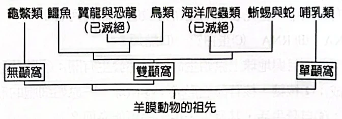
演化樹以分叉的共同祖先判斷親緣。
下列有關地球上生命起源與演化的敘述，哪些正確？
(A)異營生物較自營生物先出現 (B)生源說可說明地球最早的生命的起源 (C)DNA 是地球上最早出現的遺傳物質 (D)大氣中氧濃度逐漸累積後，使地球上生物的代謝歧異度增加 (E)族群中遺傳變異的發生是演化的必要條件。
生源說不能解釋第一個生命；遺傳變異提供演化材料。
下列哪些是達爾文和拉馬克在演化觀點上的共同點？
(A)生物的演化是連續性的漸變過程 (B)生物的演化必經突變和天擇 (C)所有生物均來自相同的原始祖先 (D)演化來自變異，與環境因素無關 (E)物種會隨時間而改變。
兩者都主張物種隨時間漸變，但對機制與起源看法不同。
長期使用殺蟲劑 DDT，會增強蚊子的抗藥性。下列敘述哪些正確？
(A)抗 DDT 的突變基因早就存在蚊子的族群中 (B)在原來族群中，抗 DDT 的基因很少 (C)蚊子在接觸 DDT 後，才有抗 DDT 的突變基因產生 (D)具抗藥性的蚊子，在有 DDT 的環境中可以生存下來 (E)DDT 對蚊子的演化沒有作用。
先有變異，再由 DDT 篩選抗藥個體。
下列有關生物演化的運作及新種誕生的途徑，哪些是合理的？
(A)先有突變再天擇 (B)海洋中的島嶼如臺灣，常孕育多種特有生物，主要原因為地理隔離造成 (C)突變決定生物演化的方向 (D)地理隔離是新種形成的必要條件 (E)長時間不同族群基因停止交流，有助於產生生殖隔離。
種化需要生殖隔離，地理隔離可促進但並非必需。
下列何種條件致使某植物不易促成自然雜交（cross-fertilization）？
(A)雄蕊比雌蕊早成熟 (B)雄花和雌花分別長在不同的植株上 (C)雄蕊和柱頭長在不同的花朵上 (D)雄蕊和雌蕊在遺傳上是自花授粉的。
自花授粉較不利於不同個體之間的自然雜交。
下圖為恐龍及鳥類的支序圖，下列敘述何者正確？
（這頁掃描模糊，圖依書上重繪。）
(A)暴龍是具有絨羽的恐龍及鳥類的共同祖先 (B)從演化的觀點，現生鳥類與暴龍具有共同祖先 (C)尾羽龍的幼體先長出絨羽，成熟後絨羽轉變為飛羽 (D)此支序圖也反映出化石出土順序：腔骨龍→暴龍→中華龍鳥→伶盜龍。
分支末端是物種，分叉點才是共同祖先。
新物種如何形成是研究物種演化過程的重要議題之一，物種形成的可能原因有很多種，但卻不包括下列哪一項？
(A)多倍體生成 (B)族群間產生生殖隔離 (C)族群間產生地理隔離 (D)族群間遺傳交流增加。
新物種靠隔離累積差異；交流增加會把差異拉近。
已知全球的哺乳類目前約有 4500 種，下圖橫座標軸箭頭所指的位置是全世界陸地合併後的面積，何以現生哺乳類的種類數比期望值高出許多？
（這頁掃描模糊，圖依書上重繪，橫軸刻度從略；箭頭處是全世界陸地合併後的面積。）
(A)地理隔離的效應 (B)人類的育種 (C)外來種的引入 (D)環境負荷量呈指數增加。
各大陸彼此隔離、各自演化，物種總數因此變多。
生物的演化過程相當漫長，不易直接觀察，常藉由各種證據方能推論其演變的歷程。下列有關各種演化證據的敘述，何者錯誤？
(A)根據化石及其所在地層，可推測古生物外形及其生活的環境 (B)根據鯨的鰭與麻雀翅膀的骨骼構造，可推測兩構造為同源器官（同源構造） (C)根據昆蟲與爬蟲類的胚胎發育過程，可推測兩者在綱的階層上具有共同祖先 (D)根據化石的地理分布，可推測當時大陸板塊的位置與現今是否相同 (E)根據物種之 DNA 分子核苷酸序列的相似性，可推測物種間的親緣關係之遠近。
昆蟲和爬蟲類不同門，不可能在綱的階層才有共同祖先。
有關演化的敘述，下列何者正確？
(A)突變常對生物體有害，故不利於生物演化 (B)一個正在演化的族群，其某一等位基因出現的頻率不符合哈溫平衡 (C)人類大量使用抗生素，使得抗藥性的細菌增加，為人擇作用的結果 (D)拉馬克用進廢退理論，是達爾文演化論的基礎。
頻率在變，就不符合哈溫平衡；這正是演化。
林奈及其後繼者的系統分類中，任何一個物種均可唯一地被歸類於屬、科、目、綱、門及界等六個層級之一。然而 1990 年代之後，「域」被外加於「界」之上，並普遍為生物學界所接受。下列何者是促成此一行動之關鍵？
(A)發現 DNA 病毒 (B)發現 RNA 病毒 (C)發現具有雙層脂質外膜的病毒 (D)發現現生古（細）菌較相似於真核生物，而非（真）細菌 (E)發現（真）細菌存在的地層比古（細）菌更為古老。
古細菌比較像真核生物，才需要在界之上再分域。
下列有關生命樹的敘述，何者正確？
(A)同源構造會發育成不同功能的器官，因此不能做為探討生命樹的依據 (B)相較於虎鯨，海豚與鯊魚有較近的親緣關係 (C)古菌域較接近真核生物域，而非細菌域（真細菌域） (D)病毒應位於生命樹的基部。
古菌與真核生物的親緣較古菌與真細菌近。
下列有關生物演化理論，何者正確？
(A)達爾文建立學說時，沒有涉及生物族群的數量 (B)沒有天擇的力量，族群仍然可以演化 (C)創始者（拓荒者）效應是屬於天擇運作的一種方式 (D)達爾文提出生物變異時未提及遺傳差異。
遺傳漂變不需天擇，也能改變族群頻率。
從達爾文的物種起源到現代演化綜論與中性理論，演化的概念與機制不斷被深化甚至挑戰，下列敘述哪些正確？
(A)功能基因的 DNA 鹼基突變時，必會影響轉譯出的蛋白質的功能，因而受天擇篩選 (B)中性突變不影響生物演化 (C)現代演化綜論與中性理論所認為的演化主要動力不同 (D)表現型與 DNA 序列變化都會被天擇所篩選 (E)族群中等位基因頻度隨世代改變即為演化。
演化可由天擇與遺傳漂變等機制改變等位基因頻率。
姊姊和弟弟唸過演化的主題後，姊姊做小結：「達爾文的天擇理論說明了族群會改變的原理」。下列他們兩人一來一往的後續對話，哪些正確？
(A)「那麼！天擇對 DNA 的改變就不管用了！」。 (B)「DNA 發生突變後，某些較適合的性狀，天擇後會將它保留下來」。 (C)「反之，對於有害的 DNA 突變，大部分天擇後會將它們移除」。 (D)「有關 DNA 的現代理論已經取代十九世紀達爾文的演化理論了」。 (E)「DNA 序列若發生趨同演化現象，則較不容易推論長時間的演化面貌」。
天擇作用於可遺傳性狀，分子證據則有助重建演化。
巴博（Svante Paabo）因發現了已滅絕人族成員之基因體（DNA 之集合）並探討現代人（Homo sapiens）之演化歷程，獲得 2022 年諾貝爾生理—醫學獎。從尼安德塔人的化石中，他先發現了粒線體 DNA，定序了第一個百萬個核苷酸和第一版的核基因體序列。稍後，又發現一個新的人族成員——丹尼索瓦人（Denisovan），並且組裝其基因體序列。他的這些研究開發了全新而完整的材料，並開創了新的科學方法，為嶄新的古基因體學研究注入動力，以探索人族的演化過程。有關探討人類演化之科學進展，下列哪些正確？
(A)要從化石人族之標本中取得粒線體 DNA 序列比取得細胞核 DNA 容易 (B)要從尼安德塔人的核酸中取相當連續的 DNA 序列比從現代人困難許多 (C)假設丹尼索瓦人之最終學名為 Homo denisova，則此人與現代人非同一物種 (D)核基因體序列所提供的證據徹底否定了由粒線體 DNA 資料推論之人類演化過程 (E)挹注巴博古基因體學研究的材料和科技已經可以延伸使用到侏羅紀的人類標本上。
古 DNA 常破碎，粒線體拷貝較多而較容易取得。
下列哪些因素傾向改變族群等位基因的頻率？
(A)族群沒有遷入與遷出的個體 (B)族群中的雌、雄個體隨機配對 (C)沒有定向或分裂天擇，有利於中間表型 (D)不受天擇篩選之中性突變 (E)環境擾動隨機移除族群內個體。
天擇、突變與遺傳漂變都可能改變等位基因頻率。
一個處於哈溫平衡的族群，其控制某性狀的不同基因型及個體數目分別是 AA＝77，Aa＝94，aa＝29。以下哪些敘述正確？
(A)A 等位基因的頻率是 0.62 (B)下一代的 A 等位基因頻率是 0.31 (C)a 等位基因的頻率是 0.26 (D)若下一代有 1000 個體，則 Aa 基因型的個體約有 470 個 (E)當族群大小驟減時，A 等位基因在下一代遺失的機率小於 a 等位基因。
先計算等位基因頻率，再以 2pq 求異型合子頻率。
(甲)～(丁)為天擇模型圖，橫軸為族群某一表現型的量值，縱軸為相對頻率，虛線為天擇前、實線為天擇後的頻率分布圖。下列敘述哪些正確？
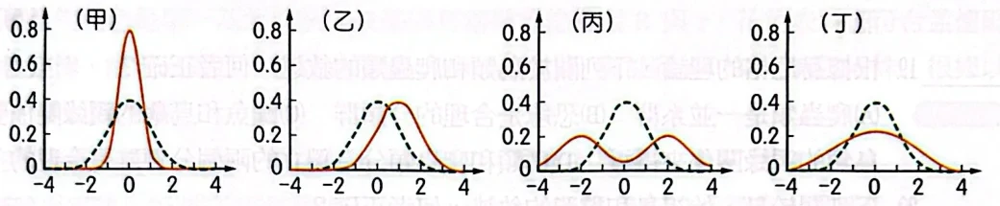
(A)圖甲表示天擇沒有作用 (B)圖乙正值個體的存活或生殖率較高 (C)圖丙平均值附近的個體較不適應 (D)圖丁離平均較遠的個體較不適應 (E)圖丙的情況最有可能形成新物種。
分裂天擇偏好兩端表型，可能促進族群分化。
達爾文的小獵犬號之旅，途經厄瓜多爾及加拉巴哥群島。回國後分析旅途所見及所收標本，歸納出共同祖先及物種形成的概念。有關此概念的推衍哪些正確？
(A)加拉巴哥群島及厄瓜多爾分處兩大洋演化出不同種的鷽鳥 (B)哺乳動物皆以乳汁養育幼兒，可證明哺乳動物有共同祖先 (C)麻雀與企鵝的翼可證明有共同祖先，但蝙蝠則不是此祖先的後嗣 (D)通常地層古老的化石構造簡單，年輕的相對複雜，可證明祖先及後代之關係 (E)原核及真核生物皆以轉錄及轉譯製造蛋白質，可推論生物界可能單一起源。
共同衍生特徵與分子機制可提供共同祖先的證據。
有關達爾文的演化論，下列哪些敘述正確？
(A)親代競爭力較強的性狀在後代族群中出現的頻率會提高 (B)達爾文提出天擇說時，未參考孟德爾的遺傳定律 (C)愈常使用的器官會愈發達，且此優勢會遺傳到下一代 (D)當環境資源有限時，可經由突變提高優勢並增加個體數 (E)特有種皆是由不同地理環境的不同始祖演化而來。
天擇使有利的可遺傳性狀較可能在後代增加。
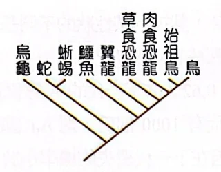
根據赫尼格的理論，下列哪些選項中的兩群分類群可合為一單系群？（多選）
(A)蛇與蜥蜴 (B)鱷魚與蜥蜴 (C)鳥與始祖鳥 (D)鱷魚與翼龍 (E)肉食恐龍與草食恐龍。
單系群須包含共同祖先及其全部後代。
根據赫尼格的理論，下列關於鳥類和爬蟲類的敘述，何者正確？
(A)爬蟲類是一並系群 (B)恐龍是合理的分類群 (C)鱷魚和烏龜的親緣關係要比鱷魚和鳥類的親緣關係來得近 (D)鳥類和爬蟲類分為獨立的兩個分類群是合理的。
傳統爬蟲類排除了鳥類，因此是並系群。
下列關於鳥、始祖鳥和翼龍的敘述，何者正確？
(A)翼龍和始祖鳥均有翅，而有翅是兩者的共有衍生特徵 (B)始祖鳥和鳥翅上均有羽，而有羽是兩者的共有衍生特徵 (C)翼龍和始祖鳥翅上均有爪，而有爪是兩者的共有衍生特徵 (D)始祖鳥口中有齒，鳥口中無齒，而有齒相對於無齒是較為進化的衍生特徵。
共有衍生特徵能支持共同支系的判斷。
下列哪一種性狀遺傳與上述案例類似？
(A)豌豆的株高 (B)色盲 (C)紫茉莉花色 (D)ABO 血型。
異型合子呈中間表現時，可用不完全顯性理解。
若這兩群成人進行隨機婚配並產下共有 100 個子女中，預期能長到成年並帶有同型 S 基因者的人數為何？
(A)70 (B)72 (C)74 (D)97。
先由親代基因型求配子頻率，再計算同型子女比例。
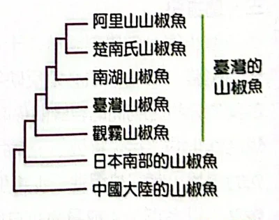
關於臺灣的山椒魚物種種化，下列哪一項觀察結果較支持島內分化論假說？
(A)山椒魚的遷徙能力不佳，活動範圍小，無法翻山越嶺 (B)不同物種的山椒魚擇偶時對異性的體色有不同偏好 (C)山椒魚對產卵的位置選擇偏好有種間差異 (D)以人工授精雜交不同種的山椒魚後所得胚胎無法正常發育。
遷徙能力弱可使地理隔離促進島內族群分化。
若想進一步驗證臺灣本島內的山椒魚起源假說，以下哪一項新發現最能反駁「島內分化論」並支持「島外分化論」？
(A)阿里山山椒魚和楚南氏山椒魚雜交所產生的後代能正常發育為成體 (B)在中國大陸發現新種山椒魚的 DNA 序列與阿里山山椒魚最為接近 (C)在韓國發現一新種山椒魚具有相當好的移動能力 (D)在日本發現一新種山椒魚的棲息環境與臺灣的原生種山椒魚相似。
若臺灣物種的最近親在島外，便為島外分化提供線索。
已知某種植物花色是單一基因控制，該基因有兩種等位基因 R 與 r，花色表現型符合孟德爾的顯隱性定律，紅花為顯性，白花為隱性。某一族群中，有紅花 64 株，白花 36 株。根據以上描述，回答下列問題。
(1) R 的等位基因頻率（allele frequency）為何？（請寫出算式）
(2) 根據哈溫定律，Rr 的基因型頻率（genotype frequency）為何？（請寫出算式）
(3) 若該族群符合哈溫平衡，下一代的紅花與白花數量比值為何？
以平衡假設從白花 q² 求 q；紅白比例為 16：9。
做完這份，第 5 單元就結束了。
對應印刷189–195頁。答案依PDF85簡答，每題都重新推導過。PDF81（印刷191頁）掃描模糊，歷屆2、4的圖依書上重繪，歷屆2–7未標年度。
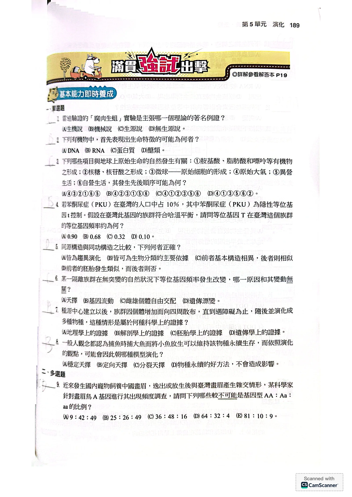
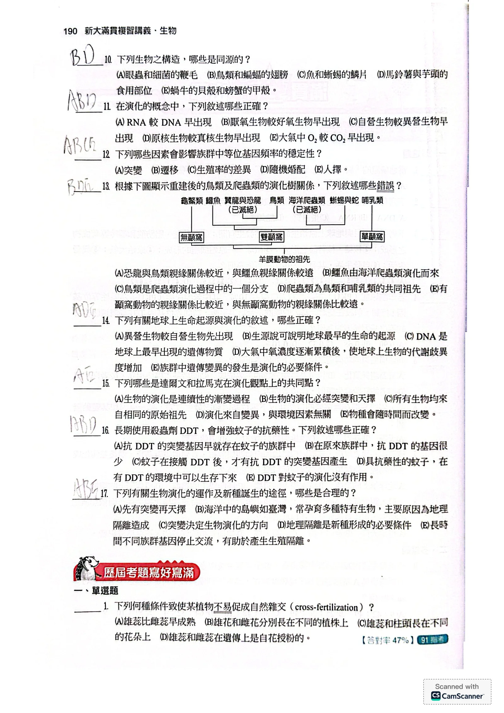
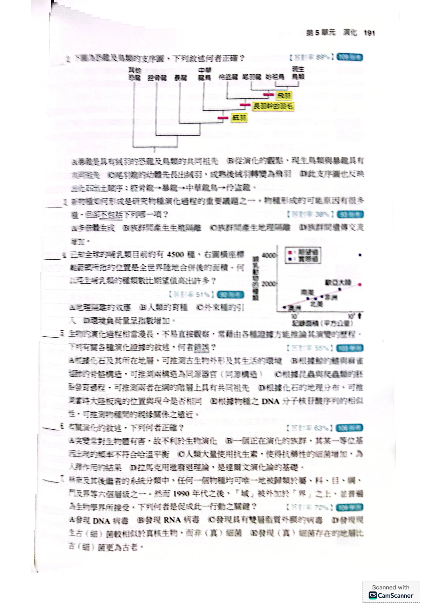
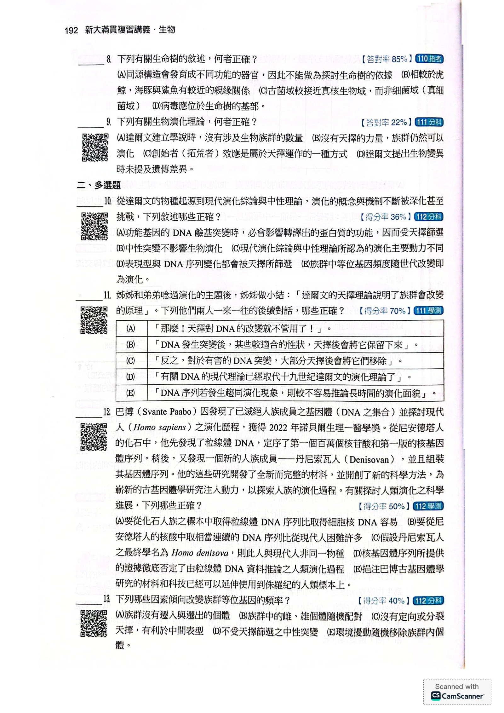
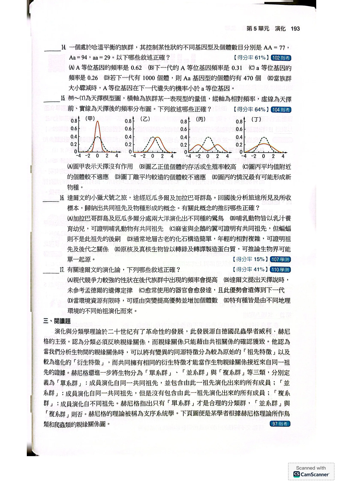
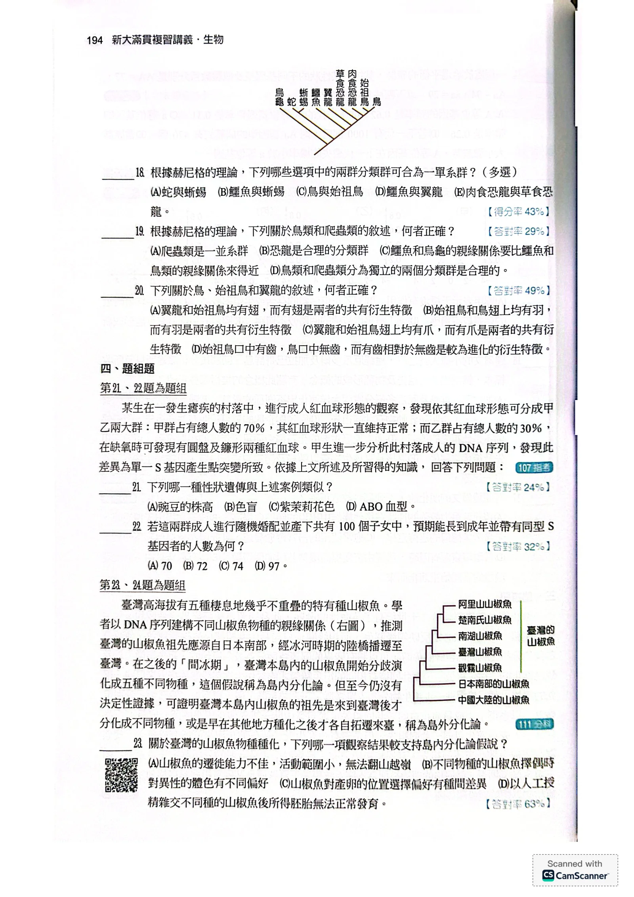
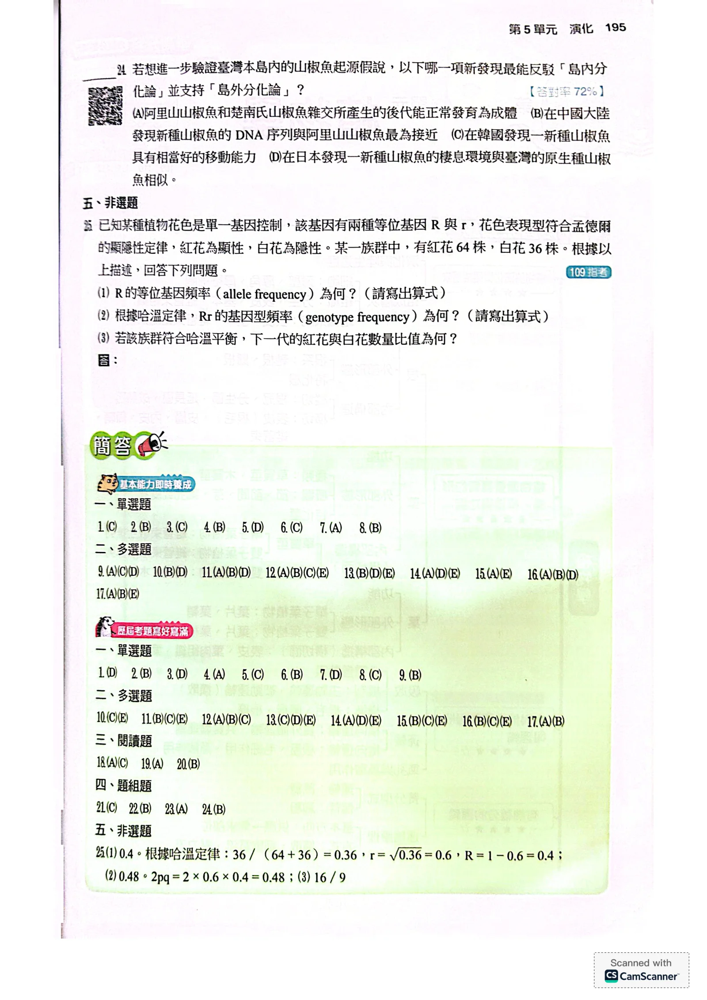